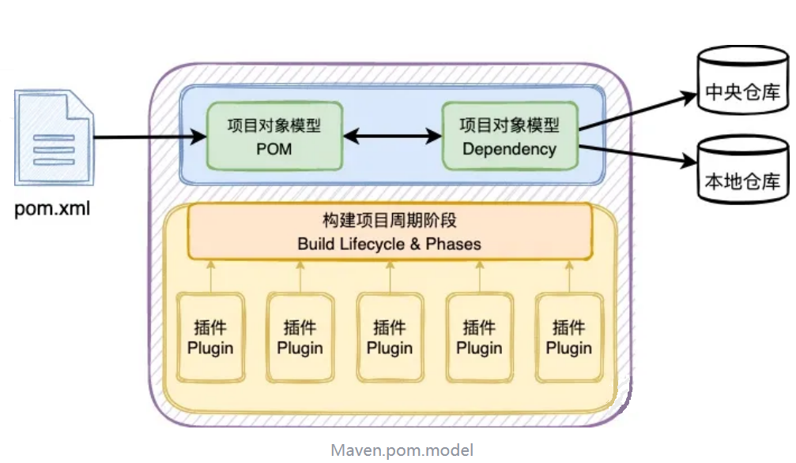
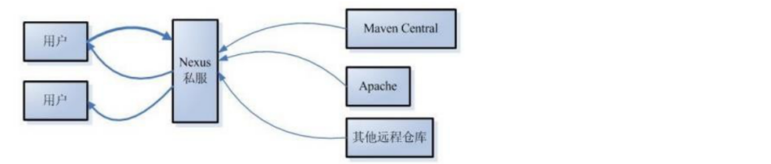

依赖（Dependency） 是 Maven 项目中声明的外部库（如 JAR 文件），通过 pom.xml 中的 <dependency>标签定义，构建时会自动从仓库下载并引入到项目中。
GAV坐标：项目的唯一名称，创建项目时定义GAV名称，引用项目时使用GAV名称。相当于项目的身份证号。
groupId：组织名称，一般是公司域名的倒写
artifactId：项目名version：版本号<groupId>com.jkweilai</groupId>
<artifactId>maven_project</artifactId>
<version>1.0.0</version>
仓库的种类
本地仓库：默认存放在自己电脑的~\.m2\repository中。也可以通过Maven的配置文件MAVEN_HOME/conf/settings.xml修改本地仓库所在的目录。

Maven工程的目录结构遵循：工程与测试分开，代码与配置分开。
maven_project
|-----src
|--------main
|------java
|------resources
|--------test
|------java
|------resources
|-----pom.xml
POM(Project Object Model)项目对象模型，它是Maven的核心组件。它是Maven中的基本工作单元。它是一个xml文件，以pom.xml驻留在项目的根目录中。👉pom.xml案例
<parent>：父工程的引用，里边是父工程的GAV<modules>：聚合工程，用来声明本模块的子模块<packaging>：打包方式，比如jar或者war<properties>：集中管理版本号（把版本号变成变量）<dependencyManagement>：统一管理依赖的版本，并不会真的导入（如果多个内容的版本一样，就使用properites里边定义的版本变量）<dependencies>：引入依赖，如果有上边的dependencyManagement，就可以省略version<plugins>：插件。项目构建的环节使用的插件，可以在这里自定义。<resources>：配置文件，可以在这里手动引入。default |
clean |
site |
|---|---|---|
| 构建和部署的完整过程 | 清理构建产物 | 生成文档和报告 |
validate |
pre-clean |
pre-site |
compile |
clean |
site |
test |
post-clean |
post-site |
package |
site-deploy |
|
verify |
||
install |
||
deploy |
<build>的<plugins>中自定义。